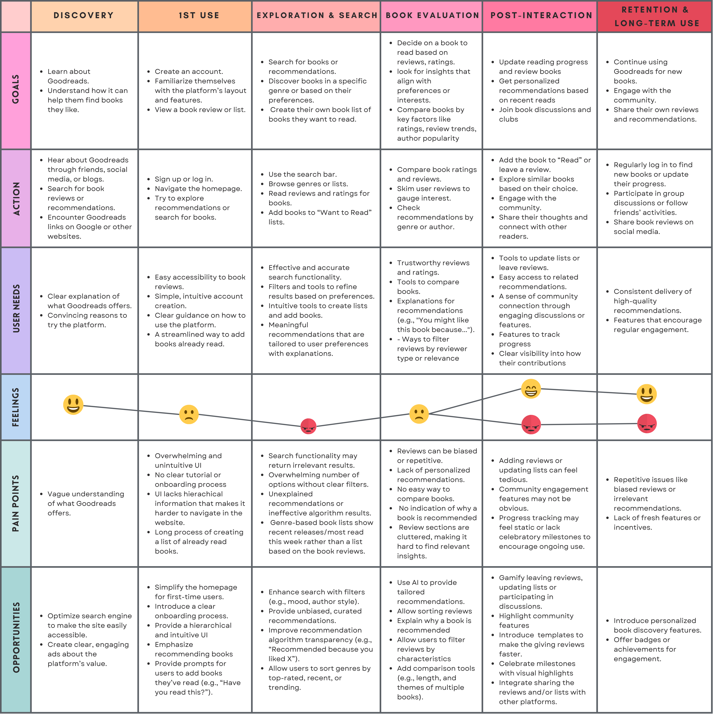
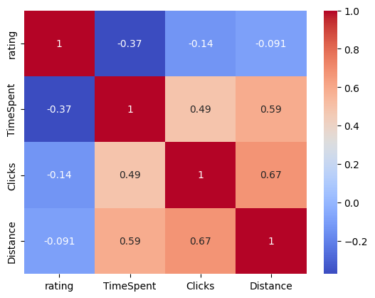
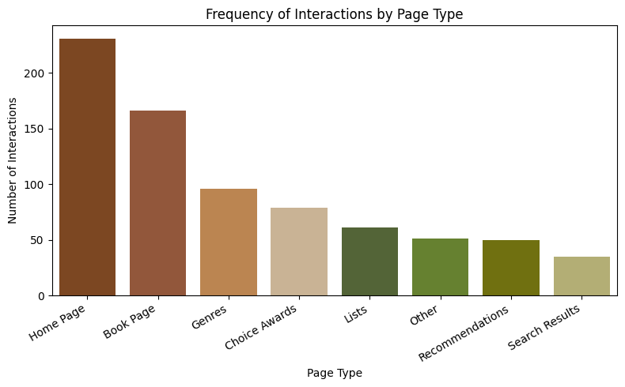
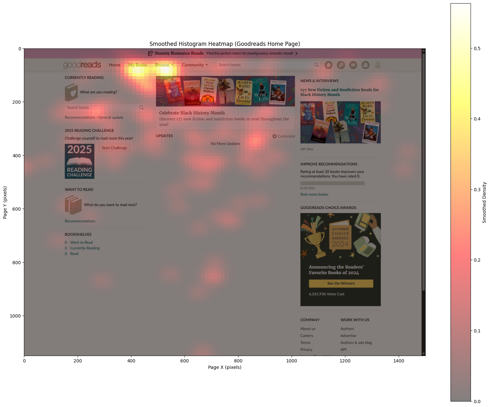
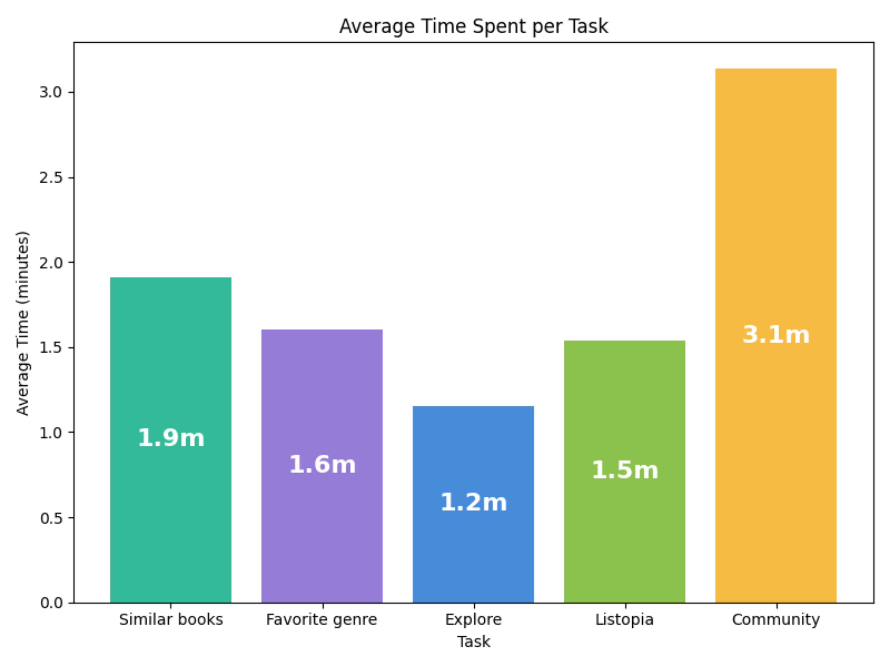
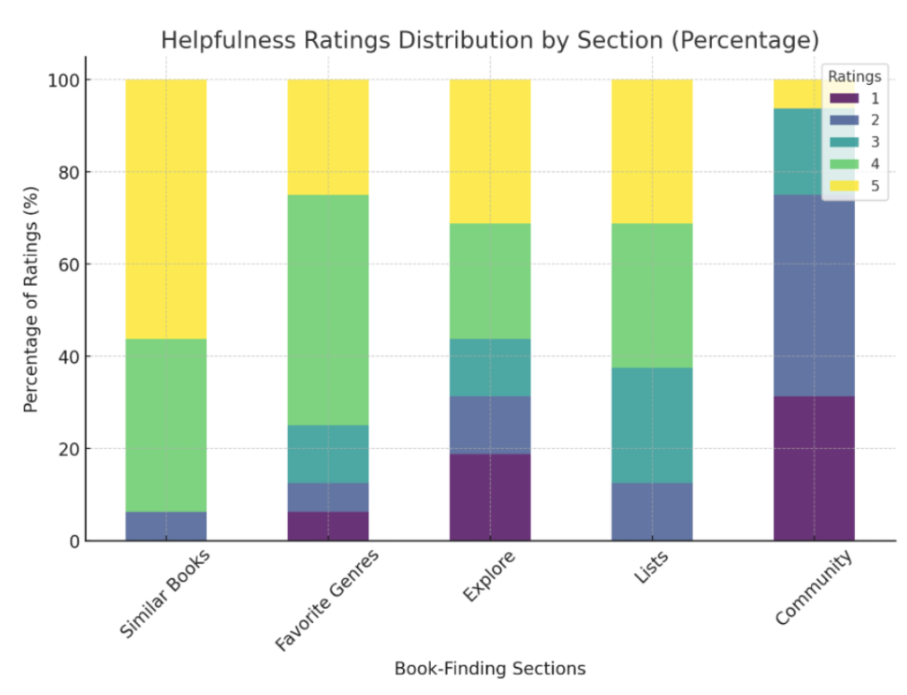
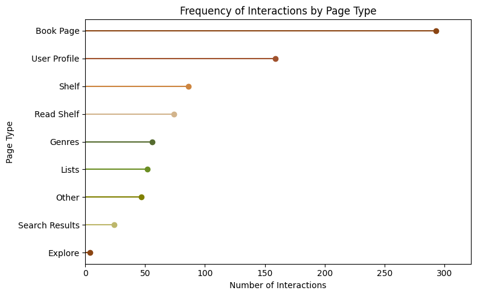
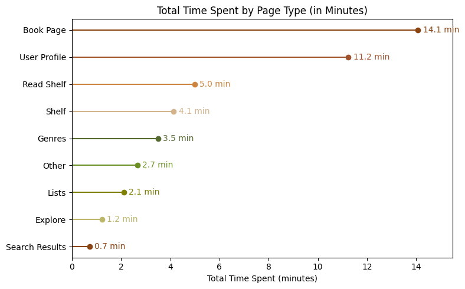

A quantitative user experience study combining cursor-tracking
analysis, structured user testing with 16 participants, and
qualitative feedback to identify navigation pain points and
recommend data-driven improvements for the book recommendation
platform.
Goodreads is one of the world's largest book recommendation
platforms with millions of users. Despite its popularity, there's
limited publicly available research on its actual usability. This
quantitative UX study evaluated how intuitive, efficient, and
satisfying the platform is for users seeking book recommendations.
By combining cursor-tracking technology with
structured user testing and qualitative feedback from
16 participants, we identified critical navigation
pain points and provided actionable, data-driven recommendations to
enhance the user experience.
Research Process
01
Goals & Metrics Definition
Defined research goals, signals, and metrics framework
02
Protocol Design
Created 3-task protocol for comprehensive testing
03
Data Collection
16 participants, cursor tracking + surveys
04
Quantitative Analysis
Python-based cursor data analysis, heatmaps
05
Qualitative Analysis
Thematic analysis of user feedback
06
Insights & Recommendations
Synthesized findings into actionable recommendations
User Research
Goodreads serves as a critical platform for millions of readers
worldwide, influencing reading choices through its recommendation
system and community features. However, despite its widespread
adoption, there is limited empirical research on its actual
usability and user experience challenges.
User Journey Mapping
Before defining our research protocol, we mapped the complete
Goodreads user journey from discovery through long-term retention.
This journey mapping revealed that the "Exploration & Search" and
"Book Evaluation" phases contain the most critical pain points,
particularly around overwhelming UI, lack of personalization, and
inefficient search functionality, which directly informed our
decision to focus our quantitative study on the book recommendation
discovery process.

Complete user journey map highlighting emotional fluctuations and
pain points across the Goodreads experience, with the most
significant friction occurring during exploration and
post-interaction phases
Journey Insight
The emotional journey reveals a concerning pattern: user sentiment
drops significantly during "Exploration & Search" and
"Post-Interaction" phases, correlating with pain points around
overwhelming information, biased reviews, and lack of
personalization. This U-shaped emotional curve, starting positive,
dipping during active use, and struggling to recover, validates
our research focus on improving the core book discovery and
recommendation experience.
Participant Demographics
16
Total Participants
75%
Ages 18-25
43.8%
Ages 18-21
37.5%
Read Monthly
18.8%
Read Weekly
Goals, Signals & Metrics Framework
Before data collection, we established a clear research framework to
guide our analysis:
Goal 1: Identify Pain PointsSignals: User
frustration, low ratings Metrics: Time spent
locating sections, interaction frequency, qualitative feedback
Goal 2: Evaluate Book DiscoverySignals: Quick find
or confusion Metrics: Time to
find book, books consulted, cursor movement distance
How intuitive, efficient, and satisfying is the Goodreads platform
for users attempting to find book recommendations? What specific
pain points exist in the user journey, and how can they be
addressed through design improvements?
Study Protocol: Three-Task Approach
We designed a comprehensive testing protocol with three distinct
tasks to evaluate different aspects of the Goodreads user
experience:
01
Task 1: Free Exploration
Participants created an account and explored the site freely to
find a book they would personally enjoy. This task assessed
first-time user experience and natural navigation patterns.
Goal: Understand initial user impressions and navigation
behavior
02
Task 2: Feature Mini-Challenges for Book Discovery
Participants searched for a book they wanted to read by
exploring different sections of the site such as Similar Books,
Favorite Genres, Explore, Lists, and Community.
Goal: Identify which sections are most usable for finding a book
users want to read
03
Task 3: Finding a Book for Someone Else
Participants looked for a book recommendation for a friend using
the Friend Profile feature. This task evaluated how well the
platform supports finding books for others based on social and
personalized information.
Goal: Measure performance of personalized recommendation tools
Data Collection Methods
Cursor Tracking Analysis
We used a cursor-tracking plugin to capture detailed
quantitative data on user interactions including click
frequency, time spent per page, cursor movement distance,
and navigation patterns.
Analyzed with Python (Pandas, NumPy, Matplotlib, Seaborn)
for heatmaps and visualizations
Surveys & Qualitative Feedback
Google Forms captured both structured ratings (Likert
scales) and open-ended responses after each task. We
conducted thematic analysis on qualitative feedback to
identify common themes.
Combined quantitative ratings with rich qualitative insights
Analysis Approach
Our dual-pronged analysis strategy combined:
Quantitative Analysis
Correlation matrices to identify relationships between metrics
(e.g., time spent vs. satisfaction ratings). Heatmap
visualizations to show interaction patterns. Bar charts
comparing engagement across different page types and features.
Qualitative Analysis
Manual thematic analysis of open-ended responses. Identification
of recurring pain points and positive experiences. Synthesis of
user quotes to support quantitative findings.
Results: Task 1 - Free Exploration
The first task revealed significant insights about first-time user
experience and navigation challenges on Goodreads.
3.9/5
Average Usability Rating
Mixed feedback: room for improvement in findability
5/16
Found Site Easy
Only 31% found navigation straightforward
4/16
Found Site Confusing
25% explicitly described confusion
3/16
Too Much Information
Design overwhelmed nearly 19% of users
Critical Insights
Correlation analysis revealed a striking pattern: users who spent
more time on the site and clicked more frequently gave
lower satisfaction ratings. This suggests that
extended interaction time indicated confusion and difficulty, not
engagement.
Bar chart analysis showed the Home Page received the highest
interaction frequency, followed by the Book Page.



Heatmap analysis revealed users primarily interacted with the
"Browse" and "My Books" sections in the navigation bar.
"My Books" Confusion for New Users
Heatmaps showed significant interaction with the "My Books"
section, which displays an empty page for new users who haven't
added any books yet. This created confusion about how to begin
exploring the site.
Recommendation: Provide onboarding guidance or
populate "My Books" with suggested content for new users to
reduce initial confusion.
Sign-In Barrier
One participant noted that requiring users to sign in before
browsing could dissuade potential users from exploring the
platform.
Recommendation: Allow limited browsing before
requiring account creation to reduce friction for new users.
Results: Task 2 - Feature Evaluation
Task 2 evaluated five core features of Goodreads through
mini-challenges. The results showed significant variation in feature
usability and user satisfaction.
1.9 min
Similar Books
Most engaging - 2.2 books consulted
~1.5 min
Favorite Genres, Explore, Lists
Positive feedback but needs filters
3.1 min
Community Section
Highest time, lowest books (0.7)
To better understand the relationship between user engagement and
satisfaction, we analyzed both the average time spent on each
feature and participants' helpfulness ratings (1-5 scale, where 5
indicates "very easy to find a book"). The comparative analysis
reveals important insights about the effectiveness of each section.

Average time spent per feature reveals the Community section
required significantly more time (3.1 minutes) compared to other
features, suggesting navigation difficulty rather than
engagement

Helpfulness ratings distribution clearly demonstrates that
Similar Books received predominantly 5-star ratings (~56% giving
5 stars), while the Community section received the most negative
ratings with nearly 31% rating it 1-2 stars
Similar Books: High Engagement
Users actively explored multiple book recommendations in this
section, suggesting the feature effectively surfaced relevant
content. The higher book consultation rate indicates productive
engagement rather than confusion.
Community Section Failure
The Community section emerged as the most problematic area. Despite
users spending the most time here (3.1 minutes), they consulted the
fewest books (0.7), indicating struggle rather than productive
engagement.
"This feels like it wasn't touched since 2009"
"HORRIBLE it looked like Craigslist from 20 years ago"
"SO HARD TO FIND A SINGLE RECOMMENDED BOOK"
— Participant Feedback on Community Section
Community Section Issues
Only 1 of 16 participants found this section
useful. The overwhelming majority expressed strong
dissatisfaction with:
⚠
Outdated, unattractive design (4 participants)
⚠
Lack of filtering options to find relevant communities
⚠
Information overload with poor organization
⚠
2 participants unable to find relevant communities at all
Recommended Improvements
Participants suggested specific improvements for the Community
section:
→
Display less information per page
→
Recommend groups based on user profile
→
Add comprehensive group filtering options
→
Complete UI redesign with modern aesthetics
→
Provide onboarding explanations for first-time users
Common Issues Across Features
Even the positively-received sections (Similar Books, Favorite
Genres, Explore, Lists) shared common improvement opportunities:
Lack of Personalization
Participants noted that recommendations didn't feel tailored to
their reading history and preferences. The platform needs better
algorithmic personalization.
Insufficient Filtering Options
Users wanted more granular control over search and discovery
through advanced filtering capabilities.
Information Overload
Multiple participants mentioned pages displayed too much
information at once, making it difficult to focus on relevant
content.
Explore vs. Lists Confusion
Three participants couldn't distinguish between the Explore and
Lists sections, finding them functionally redundant.
Results: Task 3 - Friend Profile Feature
The third task evaluated the Friend Profile feature's utility for
finding book recommendations for gifting purposes. This task
received the most positive feedback overall.
50%
Rated "Very Easy" (5/5)
Half of participants found the task very straightforward
#1
Book Page Interactions
Highest interaction frequency and time spent
#2
User Profile Interactions
Second most interacted page type
What Users Appreciated
Visible Friend Preferences
Users appreciated the ability to view friends' favorite genres,
previously read books, and personalized preferences. This
information directly informed their gift selection process.
Active Profile Utilization
Heatmap analysis showed concentrated interaction on the "Read"
shelf and favorite genres areas, confirming users actively
relied on this information for decision-making.
Cursor Tracking Insights
The Book Page dominated interactions with the highest frequency and
longest time spent. Users actively explored multiple books,
examining descriptions, author information, and reviews. This strong
engagement indicates users found the information helpful for
decision-making.


Room for Improvement
Excessive Navigation Required
Frequent back-and-forth navigation between books indicates room
for improved usability through more efficient filtering or
clearer content organization on individual book pages.
Recommendation: Implement comparison features
or side-by-side viewing to reduce navigation friction.
Missing Dedicated Gift Feature
Users suggested adding a dedicated "find book for a friend"
button with enhanced filtering options and clearer distinction
between friends' reviews and general ratings.
Overall Findings & User Sentiment
General feedback revealed a platform with solid functionality but
significant room for improvement in user experience and design.
What Users Liked
Good Core Functionality
Users acknowledged the website has good overall functionality
for discovering new books and accessing strong recommendations.
Helpful Friend Profile Section
The friends' profile feature was praised for its utility in
finding personalized recommendations.
Critical Pain Points
01
Navigation Difficulties
While navigation is generally decent, some users encountered
significant difficulties. The site needs a simpler, more
intuitive navigation structure.
02
Lack of Filtering Options
A major issue across the entire platform. Users couldn't
customize their experience or refine the information they see
effectively.
03
Weak Personalization
Recommendations didn't feel tailored to reading history and
preferences. The platform needs better algorithmic
personalization.
04
Sign-In Barrier
The website should allow users to explore features before
requiring account creation to encourage engagement without
immediate commitment.
05
Outdated Design
Particularly the community section appears outdated and needs a
complete redesign to improve usability and modernize the overall
experience.
User Sentiment Summary
Would Use Again
Mixed - many would, significant portion would not
Compared to Competitors
Average to slightly better, but some notably dissatisfied
Navigation Quality
Generally decent but room for significant improvement
Recommendations
Based on our comprehensive analysis combining quantitative metrics
and qualitative feedback, we propose the following actionable
recommendations to enhance the Goodreads user experience:
Priority 1: Critical Fixes
Complete redesign of the Community section with modern UI
patterns
Implement comprehensive filtering system across all features
Simplify overall navigation structure and information
architecture
Remove sign-in barrier for initial browsing
Priority 2: Personalization Enhancements
Develop advanced recommendation algorithms based on reading
history
Create personalized community group suggestions
Implement smart "My Books" content for new users
Add dedicated "find book for a friend" feature
Priority 3: Usability Improvements
Reduce information density across all pages
Clarify distinction between Explore and Lists sections
Add comparison features to reduce navigation friction
Implement better visual hierarchy and content organization
Impact Potential
Implementing these recommendations could significantly enhance
user satisfaction and solidify Goodreads' position as the leading
book recommendation platform. Our study shows that users want to
love Goodreads, they appreciate its core functionality and
extensive database. By addressing these usability pain points and
modernizing the design, particularly the Community section,
Goodreads can transform from "average to slightly better" to
genuinely exceptional in user experience.
Key Learnings & Reflection
1. The Power of Triangulation: Combining Multiple Data Sources
This project reinforced the value of triangulating findings across
multiple data sources. By combining cursor-tracking quantitative
data with qualitative survey feedback, we could validate patterns
and build confidence in our conclusions. For example, the
Community section emerged as problematic both quantitatively (high
time, low book discovery) and qualitatively (overwhelmingly
negative user comments).
2. Time Spent ≠ Engagement: Understanding Inverse Correlations
One of our most important insights came from the inverse
correlation between time spent and satisfaction ratings. This
challenged the common assumption that more time on site equals
better engagement. Instead, extended interaction time often
indicated confusion and difficulty. This learning has reshaped how
I interpret engagement metrics.
3. The Value of Heat Mapping for Identifying Hidden Issues
Heatmap analysis revealed problems users might not explicitly
articulate, such as new users frequently clicking on the empty "My
Books" section. Visual interaction data complemented self-reported
feedback and uncovered issues we wouldn't have found through
surveys alone.
4. Importance of Clear Research Framework (Goals-Signals-Metrics)
Establishing the Goals-Signals-Metrics framework before data
collection provided crucial structure to our research. This
framework guided our protocol design, helped us collect the right
data, and made analysis more focused and actionable. It's an
approach I'll continue using in future UX research projects.
5. Balancing Quantitative Rigor with Qualitative Insight
Initially, we attempted to use NLP for analyzing open-ended
responses, but the limited sample size made this ineffective. This
taught me to match analysis methods to sample size and recognize
when manual thematic analysis is more appropriate than automated
techniques. Sometimes simpler methods yield richer insights.
What I Would Do Differently
Recruit More Diverse Age Groups
75% of our participants were aged 18-25, which limits
generalizability. For a platform like Goodreads with a broader
demographic, recruiting more participants across age ranges
(particularly 35+) would provide more comprehensive insights.
Include Before-After Competitive Comparisons
While participants mentioned competing platforms, we didn't
systematically compare Goodreads to specific competitors.
Including structured competitive analysis tasks would have
provided clearer benchmarking data.
Cursor tracking provided excellent quantitative data, but screen
recordings would have added valuable context about what users
were seeing and doing at specific moments. This combination
would make post-analysis more insightful.
Conduct Follow-Up Interviews
Some interesting patterns emerged in the data that would benefit
from deeper exploration. Follow-up interviews with select
participants could have provided richer context for
understanding the "why" behind certain behaviors.
Conclusion
This quantitative UX study of Goodreads demonstrates the power of
combining multiple research methods to uncover actionable insights.
By integrating cursor-tracking analysis, structured user testing
with 16 participants, and qualitative feedback, we identified both
strengths and critical weaknesses in the platform's design.
Our key findings reveal that while Goodreads has solid core
functionality, particularly in features like Similar Books and
Friend Profiles, significant pain points exist in navigation,
personalization, and design, especially in the Community section.
The inverse correlation between time spent and satisfaction ratings
was particularly revealing, challenging conventional engagement
metrics and highlighting genuine usability issues.
Final Takeaway
Goodreads has the potential to be an exceptional platform, not
just an adequate one. Users want to love it, they appreciate its
extensive database and core recommendation features. By addressing
the navigation complexities, adding comprehensive filtering
options, enhancing personalization algorithms, and completely
redesigning the Community section, Goodreads can transform from
"average to slightly better than competitors" to the gold standard
in book recommendation platforms.